LEI SHIYU
University of Macau
YC67319@um.edu.mo
Ecological environments are shaped by heterogeneous temporalities, yet environmental data representations often privilege discrete measurements or common timelines that obscure how different processes become related. This paper presents Polyrhythm Loom, a research-through-design exploration of computational weaving as a medium for articulating more-than-human temporalities and ecological relations. Situated in Macau's Cotai mudflat, the interactive prototype brings together environmental model outputs, observation records, regional events, technological signals, and visitor participation into an unfolding digital fabric. Two temporal modes organise these representations through either a shared environmental timeline or agent-specific generative rhythms. A weaving-inspired computational grammar translates selected signals into digital strands and conditional inter-layer connections, allowing represented relationships to emerge, change, or be interrupted as the fabric accumulates. Reflecting on the implemented artifact, design iterations, and informal exhibition encounters, we articulate data as relation through three interconnected operations: connection, mediation, and relational composition. We discuss how computational weaving can make selected temporal differences and relational conditions structurally expressible, while acknowledging the interpretive choices and limitations involved in translating ecological processes into computational rules.
On the Cotai mudflat in Macau, tides expose and cover sediment, mangroves respond to changing light and water conditions, and migratory black-faced spoonbills inhabit the wetland seasonally. These processes unfold through different rhythms, yet remain connected through the environment they share. For us, the mudflat is not merely a site represented through environmental data, but a place encountered through on-site observation, audiovisual documentation, and environmental sensing.
Our fieldwork centred on situated environmental data collection, complemented by on-site observation and audiovisual documentation of the wetland and its human and more-than-human inhabitants. These situated practices inform our understanding of data not simply as detached measurements of an environment, but as something generated, selected, and interpreted through relations among places, sensing technologies, designers, and other agents. In this sense, data can act as a mediator through which ecological rhythms and relationships are articulated and encountered. We approach this perspective as data as relation: attending not only to what environmental data represent, but also to the relations through which they are produced and translated.
More-than-human and relational perspectives in design invite us to reconsider the roles of humans, nonhumans, and technologies in shaping shared environments [1, 2]. Likewise, situated approaches to environmental data draw attention to the places and practices through which ecological processes become measurable and interpretable [3, 4]. For us, these perspectives raise a further question about time. The agents inhabiting the mudflat do not operate according to a single rhythm: tidal fluctuations, daily environmental changes, seasonal migration, and technological sampling unfold across markedly different temporal scales. Yet these processes are not isolated; their temporal differences matter to the ecological relationships through which they coexist.
Representing these heterogeneous temporalities presents a design challenge. A shared timeline can make processes comparable, but the choice of temporal window and resolution affects which rhythms become perceptible. Representing each process according to its characteristic cycle may foreground temporal differences, yet makes their simultaneity more difficult to interpret. Moreover, temporal coincidence does not necessarily indicate ecological interaction. Informed by Temporal Design's attention to multiple and relational understandings of time [5], we ask how a shared representational structure might accommodate distinct rhythms while allowing selected ecological relationships to be articulated and critically examined.
We explore computational weaving as a response to this challenge. The direction emerged from an earlier exploration of environmental soundscape polyphony, in which separate audio tracks gradually accumulated and repeated over time. Their visual and rhythmic progression suggested the movement of a loom and the construction of cloth. This observation prompted us to consider weaving as more than a visual analogy: its sequential construction and patterned interlacements offered a potential means of composing temporal differences and relations through repeatable rules. Rather than assuming that woven connections directly reproduce ecological interactions, we investigate how weaving can serve as an interpretive and computational medium for bringing these processes into a shared composition.
Building on these perspectives, we developed Polyrhythm Loom, an interactive computational weaving installation grounded in the ecology of Macau's Cotai mudflat. The system brings together seven agents—atmosphere, mangroves, black-faced spoonbills, tides, mud and sediment, technological instruments, and visitors—whose rhythms are represented through environmental data, documented records, models, and interaction signals. The digital weave unfolds over time, while bodily input through a treadle and gesture-based interaction allows visitors to contribute to its changing patterns. The project explores both a shared mudflat clock and agent-specific temporal mappings, alongside weaving rules through which selected ecological relationships can be expressed. The result is not a transparent reproduction of the wetland, but an authored interpretation shaped by data availability, temporal choices, computational mappings, and design decisions.
Guided by a relational understanding of environmental data, we investigate computational weaving as a means of articulating heterogeneous ecological temporalities and their interconnections. Our inquiry addresses two research questions:
RQ1. How can computational weaving articulate the heterogeneous temporalities of more-than-human agents within a shared ecological context?
RQ2. How can computational weaving translate relationships among ecological agents while allowing human participants to become part of the unfolding weave?
We approach these questions through research through design [6, 7], drawing on situated observation, audiovisual documentation, exploratory environmental sensing, iterative prototyping, and critical reflection on the resulting computational mappings. Our inquiry focuses on the design processes, implemented system, and interpretive possibilities of the artifact, rather than on establishing generalisable claims about visitors' perceptions or ecological outcomes.
This paper makes three contributions:
Rather than claiming to reproduce ecological relationships transparently or demonstrate particular visitor outcomes, we examine how the choices involved in sensing, selecting, translating, and interacting with data participate in shaping relationships among the environment, the artifact, and its human participants.
Relational approaches to agency challenge the assumption that humans and nonhumans act as isolated, self-contained entities. Actor-Network Theory (ANT) understands agency through associations among heterogeneous actors, recognising that objects and technologies can mediate and transform actions rather than simply transmit them [8]. From a related but distinct perspective, Haraway’s notion of becoming-with emphasises how beings are shaped through their encounters with others [9]. Her later account of sympoiesis, or making-with, further foregrounds the interdependent processes through which worlds are collectively made [10]. Together, these perspectives offer ways of understanding ecological relations as ongoing processes of mediation and mutual involvement rather than connections among entirely independent entities.
In HCI, more-than-human design has drawn on relational perspectives to reconsider the roles of nonhuman entities, materials, and technologies in design [1, 2]. Projects such as Thing Ethnography [11] and Morse Things [12] have explored alternative ways of attending to the activities and relative autonomy of nonhuman things. Nicenboim et al. [13] further examine how decentering can operate through design practice rather than remaining solely a theoretical commitment. These works encourage consideration not only of whom or what design represents, but also of how design practices and technological artifacts participate in configuring relations.
This relational understanding has implications for environmental data. If technologies participate in mediating relations, then data collection, processing, and representation cannot be understood solely as neutral operations applied to an external world. The significance of data lies not only in the phenomena they describe, but also in the associations and transformations through which those phenomena become available for interpretation. This raises questions about the particular places, instruments, and practices through which environmental data are produced.
Environmental data do not emerge independently of the places and practices through which they are collected. In All Data Are Local, Loukissas [3] challenges the treatment of datasets as context-free information, proposing attention to data settings: the situated social, technical, and material conditions under which data are produced, maintained, and interpreted. This perspective is particularly relevant to environmental data, whose apparent numerical precision may obscure differences in spatial coverage, sampling practices, and measurement conditions.
Environmental sensing is similarly more than a neutral process of recording pre-existing conditions. In Program Earth, Gabrys [4] examines how sensing technologies participate in configuring environmental knowledge and relations. Sensors, infrastructures, and computational practices shape what becomes measurable and how environments are encountered. Rather than approaching sensing as a transparent channel between the world and its digital representation, this perspective invites attention to the mediations through which environmental phenomena become data.
Beyond instrumental measurement, attending to an environment also involves embodied and situated practices of observation. Ingold [14] approaches attention as an openness to the world and its unfolding possibilities, rather than simply the acquisition of predetermined information. This perspective helps illuminate how environmental understanding may emerge through observation, listening, and audiovisual documentation alongside computational sensing. These practices do not provide unmediated access to the environment; each directs attention toward particular qualities while leaving others outside its frame.
Within HCI, Chemicals in the Creek [15] demonstrates how environmental data can be recontextualised through situated data physicalization and community engagement. Rather than relying solely on numerical presentation, the project relates environmental information to a specific place and the concerns of people connected to it. Such work suggests that the significance of environmental data depends not only on the values represented, but also on where, how, and by whom those values are encountered.
Taken together, these perspectives position environmental data as situated and mediated rather than interchangeable signals. They also draw attention to the transformations involved when observations, sensor measurements, records, and modelled processes are brought into a shared representation. Such transformations become particularly consequential when the phenomena being represented unfold across different temporal scales.
Ecological environments are constituted through multiple rhythms that unfold across different durations, frequencies, and scales. Lefebvre's rhythmanalysis offers a relational understanding of rhythm, examining how repetitions and differences in time and space intersect in everyday life [16]. His concepts of polyrhythmia, eurhythmia, and arrhythmia draw attention to the coexistence, coordination, and disruption of rhythms, rather than treating them as isolated periodic patterns. From this perspective, attending to the temporalities of an ecological environment involves considering not only the rhythms of individual agents, but also the relationships and tensions through which these rhythms coexist.
Within design research, Pschetz and Bastian [5] challenge dominant understandings of time as homogeneous, external, and universally measurable. Their account of Temporal Design proposes engaging with time as multiple and relational, shaped through material, social, cultural, and political processes. Extending the discussion to multispecies ecologies, Bastian and Bayliss Hawitt [17] draw on phenology to examine how the timing of life-cycle events is shaped through relations across species and environmental conditions. Their work highlights ecological coordination and temporal mismatches, suggesting that an organism's temporality cannot be fully understood as an isolated, fixed cycle. Oktay et al. [18] further explore how designing with more-than-human temporalities can encourage practices of noticing and care beyond human-centred temporal assumptions. Together, these perspectives invite designers to consider whose rhythms become perceptible, how they are represented, and how different temporal processes enter into relation.
In HCI, Leaky Cups [19] offers a material exploration of alternative temporal logics through data-enabled artifacts that respond to local water conditions. By deliberately introducing leaking and dysfunction into familiar objects, the project challenges assumptions about efficiency, progress, and the apparent neutrality of technological temporalities. Rather than using environmental data solely to communicate measurements, it explores how material behaviour and situated interaction can invite different relationships with water and time. This work demonstrates how temporal design can move beyond the visual representation of data toward embodied and relational encounters, while foregrounding tensions involved in technological mediation.
These studies suggest that designing with ecological temporalities involves more than representing processes at different speeds. Bringing heterogeneous rhythms into a shared composition requires decisions about temporal reference points, sampling intervals, representative cycles, and forms of comparison. Such decisions may make certain patterns perceptible while obscuring others. Moreover, temporal alignment does not in itself establish ecological interaction: the relationships among rhythms require interpretation grounded in their environmental contexts. This leaves open the design question of how temporal differences and ecological interconnections might be articulated together through a shared representational structure.
Weaving offers a distinctive way of organising elements through repeated operations and structural interconnections. Beyond its metaphorical associations with entanglement, woven structures emerge through the sequential insertion of weft picks and their interlacement with warp threads. These operations produce patterns through repetition, variation, and the organisation of connections within a shared fabric. In HCI, Devendorf, de Koninck, and Sandry [20] introduce weave structures as a domain of technical and material knowledge, examining how weaving practices can inform interactive textile design while reflecting on the exchange of knowledge between craft and computation. Their work encourages attention to the structural logic of weaving rather than treating textile surfaces as passive substrates for technological applications.
Computational approaches further demonstrate how weaving can operate as a programmable design language. AdaCAD [21] introduces parametric design as a form of notation for complex weaving, enabling woven structures to be generated and transformed through computational relationships. Such approaches suggest possibilities for understanding weaving drafts not simply as images of finished textiles, but as descriptions of how structures are constructed. For data-driven design, this distinction is significant: data may inform the operations and interlacements through which a pattern emerges, rather than being mapped solely onto its visual appearance.
Research on data textiles and data physicalization has also explored how material forms shape the interpretation of abstract information. Friske, Wirfs-Brock, and Devendorf [22] examine the entangled roles of makers and interpreters through personal data narratives translated between yarn and sound, highlighting how material choices and interpretive practices participate in data storytelling. Jansen et al. [23] establish data physicalization as an area concerned with physical artifacts whose forms and material properties encode data. More recently, Purdue et al. [24] investigate the practices of data textile creators, showing that textile-based data representation encompasses diverse motivations, materials, and methods of making. These studies point to opportunities for engaging with data through processes of making and interpretation, while also raising questions about how representational and material choices shape meaning.
Considered alongside relational approaches to agency, situated environmental data, and ecological temporalities, computational weaving offers a promising—but not neutral—means of organising heterogeneous ecological processes through a shared structure. Its sequential operations allow temporal accumulation to take form, while programmable patterns and interlacements provide a language for composing selected differences and relationships. Yet how heterogeneous ecological rhythms and selectively inferred relationships might jointly inform the construction of an interactive computational fabric remains underexplored, particularly when their translation into weaving rules involves interpretive choices of data, scale, and structure. Addressing this gap, Polyrhythm Loom investigates computational weaving as a medium for articulating more-than-human temporalities and ecological relations through an unfolding digital weave that invites bodily participation.
We adopted a research-through-design (RtD) approach [6, 7], using the development of Polyrhythm Loom to investigate how environmental data, heterogeneous temporalities, and ecological relationships might be articulated through computational weaving. Rather than treating the artifact solely as an outcome, we approached its making as a process of inquiry in which design decisions, computational translations, and interactive encounters offered opportunities for reflection.
The research developed through interconnected activities: situated engagement with Macau's Cotai mudflat, environmental data collection and exploration, iterative computational prototyping, and the development of an interactive digital weaving installation. These activities were not strictly sequential. Early explorations of environmental soundscape polyphony informed the turn toward weaving, while subsequent iterations examined how agent-specific rhythms could be organised into a shared structure and how selected relationships could be represented through weaving-inspired rules. The development process involved moving between environmental information, temporal mappings, computational representations, and interactive forms.
The project combined different forms of research material, including environmental datasets and modelled processes, field observations and audiovisual documentation, prototype iterations, computational mapping decisions, and reflections arising from an exhibition of the interactive system. These materials served different purposes: environmental data informed the computational representations; field engagement provided situated encounters with the wetland; and prototyping and exhibition offered occasions to examine the possibilities and limitations of the resulting design.
Our analysis is therefore primarily reflective and artifact-centred. We examine how particular choices of data, temporal scales, weaving operations, and bodily interaction shaped the system and the relationships it could express. Informal exhibition comments offer additional perspectives on the experience, but are not treated as evidence from a systematic user study. Similarly, the computational weave is understood as a designed interpretation of ecological processes rather than a direct or comprehensive model of the wetland.
The Cotai mudflat in Macau served as the ecological context for this research. Its physical accessibility enabled direct engagement through observation and documentation, while its intertidal environment brought together atmospheric, biological, hydrological, and sedimentary processes operating across different spatial and temporal scales. We drew on the concept of Earth's Critical Zone, which understands the near-surface environment through interactions among air, water, soil, rock, and living organisms [25]. Rather than treating the mudflat as a collection of separate environmental elements, this perspective provided a framework for considering the relationships among its interacting processes.
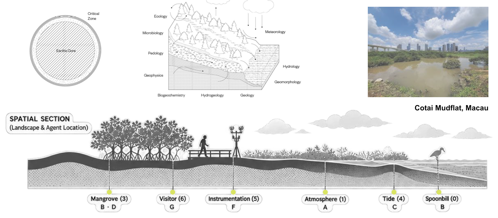
Environmental data collection and exploration formed a central part of the research practice. Our engagement combined exploratory on-site sensing with direct observation, audiovisual documentation, and the investigation of existing environmental data sources. These activities provided different ways of encountering the wetland, from measurable environmental conditions to the visible and audible activities of its inhabitants and surroundings. They also highlighted distinctions between environmental phenomena encountered at the site and those represented through available digital data.
To construct the computational weave, we worked with heterogeneous environmental sources, including measurements, existing records, and modelled processes, alongside signals generated through human interaction. These sources differed in temporal resolution, geographic specificity, and their relationship to the Cotai site. The ecological processes being represented were therefore distinguished from the particular datasets or models serving as their computational proxies.
While field engagement formed part of the situated research practice, on-site sensor measurements had not yet been integrated into the running digital weave, and field records had not directly determined the system's agent selection or mapping rules. This distinction remains important when interpreting the resulting artifact: the computational weave draws on selected representations of the wetland rather than a comprehensive, continuously measured account of its ecological conditions.
To articulate the heterogeneous processes of the Cotai mudflat through computational weaving, we organised the system around seven agents: atmosphere, mangroves, black-faced spoonbills, tides, earthquakes, technological instrumentation, and human participants. Drawing on the integrative perspective of the Critical Zone, these agents span atmospheric, biological, hydrological, and geological processes, while also including the technical apparatus and human activities through which environmental phenomena are encountered and represented. They constitute a selective design model rather than a comprehensive ecological taxonomy. In particular, the inclusion of instrumentation and visitors extends the composition beyond ecological processes to consider sensing technologies and human participation as part of the relational system.
The implemented prototype draws on heterogeneous sources of environmental information. Atmospheric conditions are represented through model-derived CO₂ and meteorological variables retrieved from Open-Meteo, while shortwave radiation serves as a proxy for light conditions associated with mangrove environments. Tidal dynamics are represented through modelled sea-level height. Black-faced spoonbill presence draws on regional observations retrieved from iNaturalist and is supplemented by computational estimates of seasonal presence and potential feeding conditions. Geological events are introduced through earthquake records retrieved from the USGS, using a regional search area extending beyond the immediate wetland. These sources differ in geographic extent, temporal resolution, and evidential status. Radiation does not directly measure mangrove physiology, observation records do not establish continuous spoonbill presence, and inferred feeding windows do not constitute observed feeding behaviour.
The system also incorporates rhythms generated through computation and interaction. An instrumentation strand responds to variations in the timing of the digital weaving process, making aspects of the system's own operation perceptible within the composition. Optional serial and field-data inputs can modify selected environmental strands, while treadle interactions introduce a visitor strand and influence particular subsequent connections. Gesture-based interaction provides an additional means of navigating and activating parts of the installation, rather than generating an independent data strand.
Rather than assigning each agent an equivalent measurement stream, we treat its data as a selected proxy for particular processes, conditions, or events. Environmental variables and inferred relationships are translated into strand densities, positions, annotations, and conditional connections between layers. The latter are computational interpretations of selected ecological relationships, not direct observations or validations of their causal mechanisms. This distinction is central to the design's relational approach: the weave does not simply aggregate environmental information, but makes visible the transformations through which heterogeneous data and human actions become part of a shared composition.
Addressing RQ1 involves a tension between two ways of understanding ecological time. To examine relationships among agents, their conditions must become comparable within a shared environmental moment. Yet aligning every process to the same clock risks obscuring the different durations, recurrences, and temporal characteristics through which those agents are represented. We therefore developed two complementary temporal modes: Mudflat Clock, which foregrounds coexistence through shared environmental time, and Intrinsic Time, which foregrounds difference through agent-specific temporal models. These modes do not seek to identify a single correct representation of ecological time. Instead, they explore how computational weaving can accommodate both temporal alignment and heterogeneity within a common compositional medium.
Mudflat Clock organises selected environmental information around the question of what occurs within a shared environmental moment. It maps environmental series and event records onto a common sequence of 15-minute picks, enabling different agents' represented conditions to be brought into temporal correspondence. This alignment is especially important for RQ2, since conditional connections between agents depend on evaluating selected environmental states within corresponding time windows.
The computational score contains 480 positions: 384 representing the preceding four days and 96 representing the following 24 hours. Numerical time series are aligned through interpolation and, where necessary, bounded substitution or local fallback functions. Discrete events, including regional earthquakes, are assigned to relevant temporal windows.
Mapped values are then normalised or evaluated against agent-specific conditions. For example, tidal height and atmospheric CO₂ influence corresponding strand parameters, radiation informs the mangrove-associated strand, and selected weather thresholds affect relational connections. The common interval is a design resolution rather than the original sampling frequency or characteristic period of every environmental process.
Mudflat Clock thus provides a temporal structure for composing selected processes as coexisting and potentially related, without implying that their underlying data have equivalent origins or temporal characteristics.
Intrinsic Time explores a different mode of temporal composition. Rather than retaining a shared environmental timeline, cyclic agents are represented through selected characteristic periods, each distributed across 24 weft picks. The temporal duration represented by one pick therefore depends on the agent's assigned period.
Unlike Mudflat Clock, the current Intrinsic Time implementation draws on locally generated functions for atmospheric, light-related, spoonbill, and tidal processes, alongside generated earthquake events. It does not resample the remotely retrieved datasets used by the default mode. This distinction means that the two modes differ in both temporal organisation and signal generation.
The term intrinsic is therefore used as a design designation rather than a claim to reproduce an agent's complete or authentic ecological time. The selected cycles foreground particular rhythmic characteristics but cannot encompass the full temporal complexity of the represented processes. Moreover, equivalent pick positions across agents do not necessarily correspond to the same environmental moment.
The system introduces a third rhythm through the performance of digital weaving. Under its default configuration, a new pick is generated approximately every 1.1 seconds. In Mudflat Clock, each pick corresponds to 15 minutes of represented environmental time, allowing multi-day sequences to unfold over a comparatively short exhibition encounter.
Visitor actions occur within the immediate time of the installation. Treadle input contributes a human strand and can affect selected subsequent connections, while the instrumentation layer registers aspects of computational timing. Environmental, computational, and participatory times are therefore brought together without being treated as equivalent.
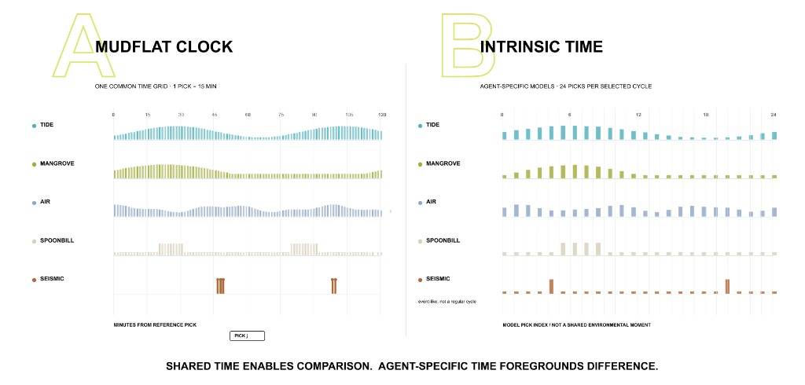
Computational weaving provides the structural language through which the temporal scores described in Section 3.4 become a progressively unfolding digital fabric. Rather than directly plotting environmental values as continuous curves, the prototype translates selected data and generated signals into discrete strand parameters and conditional connections between layers. Its weaving grammar comprises three interconnected operations: generating agent-specific strands, composing their relationships through digital stitching, and accumulating these structures pick by pick.
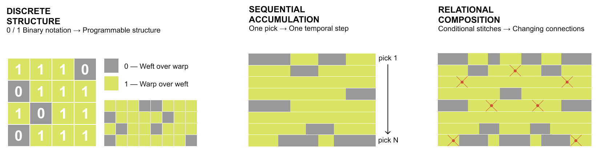
For each pick, the system retrieves the corresponding score values for the represented agents and computes a set of strand parameters. Depending on the agent, these include normalised intensity, strand density, and lateral position across the fabric. Tidal height, for example, influences the density and shoreward position of the tidal strand, while shortwave radiation modulates the density of the mangrove-associated strand. Earthquake events produce discrete geological marks, whereas the instrumentation strand responds to fluctuations in the timing of the digital system.
The rendering algorithm converts these parameters into discrete coverage cells for each layer. A binary coverage array, cov[k], specifies which horizontal cells of the current pick are occupied by the strand associated with agent k. These cells are subsequently rendered as digital yarn. Although this procedure borrows the discrete organisation of weaving, the coverage values describe the presence of rendered strands rather than the over–under interlacements of a conventional loom draft.
The seven layers share the same pick index, allowing their data-derived strands to accumulate in parallel as the fabric develops. Their individual values and spatial configurations nevertheless remain distinct, preserving differences among the represented processes within a common computational structure.
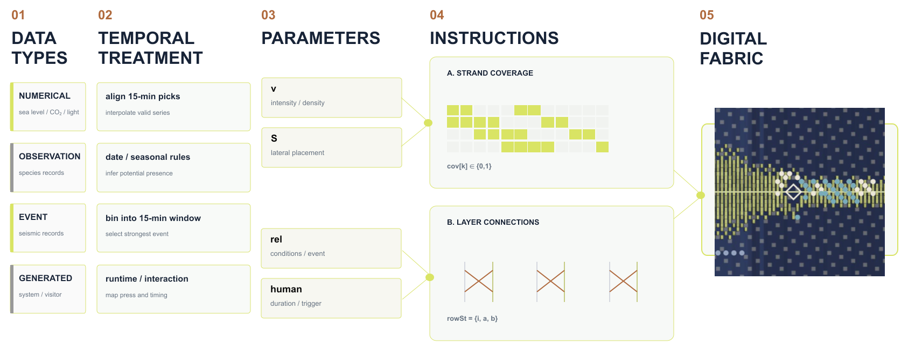
Beyond generating individual strands, the system encodes selected relationships through conditional stitching rules. In Mudflat Clock, ecological conditions and inferred events are translated into relational instructions associated with particular picks. These include potential spoonbill feeding and roosting conditions, tidal interactions with mangrove-associated strands, atmospheric relationships, and earthquake-triggered disturbances.
The algorithm represents individual connections as records specifying a horizontal position and two layer indices, \texttt{{i, a, b}}. These instructions are rendered as stitch marks on the composite fabric and as connections between layers in the separated view. They should therefore be understood as digital representations of relational binding, rather than physical stitches or verified ecological interactions.
The rules also allow connections to be interrupted. When wind speed or precipitation exceeds the configured disturbance thresholds, the system removes ordinary relational stitches for the corresponding pick, while retaining earthquake-triggered connections. Treadle events can additionally modify subsequent feeding-related connections. Through these operations, relationships are not simply indicated by the proximity of visual patterns: they are introduced, maintained, or removed through explicitly defined computational conditions.
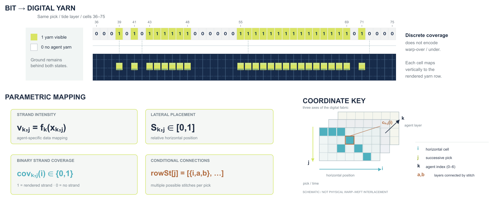
Each generated pick combines the agent-specific strand coverage and its associated relational connections. The system renders these instructions sequentially, allowing the digital fabric to accumulate over the course of the exhibition. The resulting composition is therefore both data-driven and performative: retrieved environmental information and modelled processes determine aspects of its structure, while computational timing and visitor actions influence how that structure unfolds.
Visitors contribute through treadle input, which generates a human strand whose density responds to press duration. Under selected conditions, these actions also affect subsequent relations involving the spoonbill strand. Gesture-based interaction supports the navigation and activation of exhibition functions, but does not directly generate the human strand. These distinctions clarify how human actions participate in the weaving process without implying that such interactions alter the ecological conditions represented by the underlying data.
The current implementation develops a computational grammar inspired by weaving rather than a fully specified fabrication system. Its agent coverage arrays, layered strands, and conditional stitch records provide a discrete and inspectable account of how the digital fabric is generated, but do not yet constitute the warp–weft interlacement matrix required for direct production on a physical loom. The displayed base fabric structure remains fixed, while environmental values and relational conditions modify the digital strands and their connections.
This distinction is consequential for the project's material development. Translating the digital composition into physical fabric would require decisions about how its layered relations correspond to actual weave structures, how connections are produced through warp and weft, and how fabrication constraints influence the resulting representation. In the present study, the digital weave serves as an experimental medium for investigating how heterogeneous temporalities and selected ecological relationships can be composed through programmable, weaving-insp
The computational weaving system was developed into an interactive exhibition prototype in which the digital fabric unfolds continuously on screen. Rather than presenting a completed visualisation, the installation invites visitors to encounter an ongoing weaving process through two complementary forms of interaction: contributing to the fabric through a treadle and exploring its layered structure through navigation and gestures.
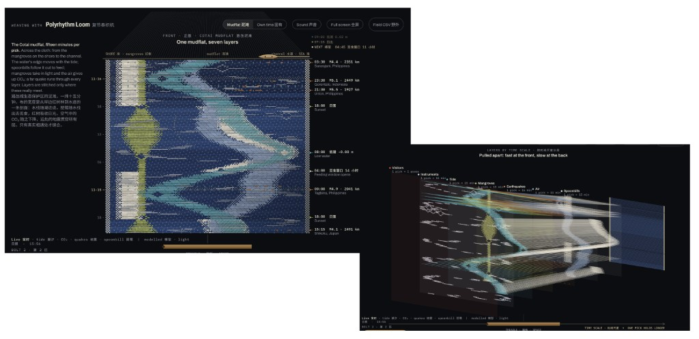
The interface presents seven computational layers accumulating against an indigo-toned ground. The fabric's width represents a conceptual transect from the mangrove-lined shore towards the channel, while successive picks organise environmental time. In Mudflat Clock, annotations indicate selected conditions and events, including tidal extrema, sunrise and sunset, regional earthquakes, and inferred ecological activity.
The composition draws on retrieved environmental information, computational models, and forecast data rather than continuously measured conditions at the site. Its ongoing generation is therefore a performance of translated environmental time, not a real-time reproduction of the mudflat.
Visitors can explore the fabric through three views: a composite view showing the accumulated weave, a separated-layer view revealing connections between strands, and an individual-layer view displaying selected data values, events, and strand trajectories. Moving between these views allows the fabric to be encountered both as a shared composition and as a set of differentiated processes.
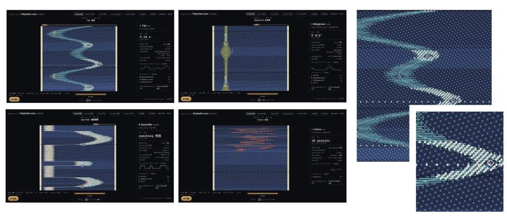
The treadle enables visitors to contribute directly to the evolving weave. Pressing and releasing it generates a madder-red human strand, whose density is influenced by press duration. Rather than simply advancing the visualisation, the action becomes a visible addition to a composition already shaped by environmental and computational processes.
Under selected conditions, treadle input also modifies relational connections. When activated during an inferred spoonbill-feeding window, it can interrupt subsequent feeding-related stitches and temporarily alter the spoonbill strand. This interaction represents a designed possibility of human disturbance rather than an observed ecological response. It introduces human participation as a potentially consequential relation within the weave.
The treadle logic can be activated through compatible external devices, keyboard input, or an on-screen control, depending on the exhibition configuration.
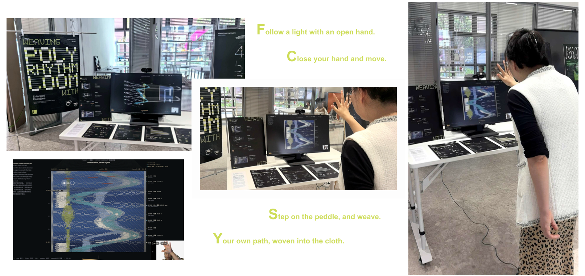
Beyond contributing a strand, visitors can navigate the fabric through interface controls and supported hand gestures. Grasping gestures allow transitions between views, while a sustained open-hand gesture can initiate a separate audiovisual sequence. Optional sound responses accompany aspects of the weaving experience. Unlike the treadle, these interactions primarily support navigation and experiential exploration rather than generating a human strand.
The prototype also supports optional serial sensing and recorded field-data playback, which can modify selected environmental strands. These pathways extend possibilities for situated input but remain distinct from the remote datasets driving the default composition.
Together, these interaction modes offer different forms of engagement: the treadle incorporates human action into the fabric, while layered views and gestures support closer attention to its constituent processes and connections. Whether visitors interpret these representations as ecological relationships remains an empirical question beyond the scope of the present study.
This section reflects on the design outcomes of Polyrhythm Loom through the development and implementation of its computational weaving system. Rather than presenting a formal evaluation of visitor experience, we examine how particular design decisions shaped the representation of heterogeneous environmental temporalities, the construction of relational connections, and the possibilities for human participation. Our reflections draw on the implemented artifact, computational rules, prototype iterations, and informal exhibition encounters. These forms of evidence support an analysis of the design's expressive possibilities and limitations, rather than generalisable claims about audience understanding.
One outcome of developing Polyrhythm Loom was the recognition that making multiple environmental rhythms visible requires more than placing their data streams along a common timeline. The early exploration of multiple sound-based tracks provided a way of presenting distinct processes together, but the transition towards computational weaving introduced another design question: how might differences in temporal behaviour become part of a progressively constructed shared structure?
The implemented system approaches this question through two forms of temporal organisation. In Mudflat Clock, environmental data and event records are translated into a shared sequence of fifteen-minute picks. This allows atmospheric, hydrological, biological, and geological representations to occupy corresponding positions in the fabric. However, the shared grid does not erase differences in data provenance or temporal resolution. A model-derived sea-level value, a regional species observation, and an earthquake event may be organised within the same weaving sequence without constituting equivalent forms of environmental evidence.
Intrinsic Time takes a different approach by distributing selected characteristic periods across agent-specific sequences. In the current prototype, these sequences are produced through internal computational models rather than the retrieved data used by Mudflat Clock. The two modes therefore expose a representational tension between organising processes through shared time and foregrounding selected rhythms through agent-specific time models. Their differences cannot be attributed to temporal organisation alone, since the underlying signal-generation methods also differ.
The sequential generation of the digital fabric introduces a further transformation. Under the default playback configuration, a fifteen-minute environmental interval is represented by a pick generated approximately every 1.1 seconds. Multi-day environmental durations can thus unfold within minutes of exhibition time. This compression does not reproduce the rhythms of the mudflat at their original pace; rather, it makes the accumulation of selected environmental representations available within the temporal constraints of an exhibition encounter.
The two modes reveal a design tension between temporal correspondence and temporal specificity. A shared clock makes selected environmental conditions comparable and supports conditional relational rules, but requires heterogeneous sources to be aligned to an authored temporal resolution. Agent-specific models foreground differences in rhythmic character, while their pick positions no longer necessarily refer to shared environmental moments. This suggests that composing more-than-human temporalities is not simply a matter of selecting an appropriate timescale, but of negotiating which forms of difference and relation a temporal representation is intended to support. The resulting fabric offers an inspectable arrangement of translated rhythms, while also revealing the selective and interpretive character of the temporal mappings through which that arrangement is produced.
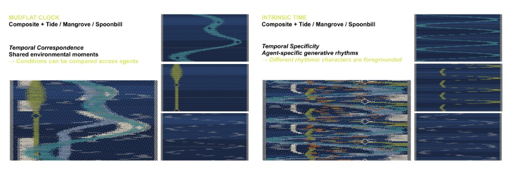
A central design outcome of Polyrhythm Loom concerns how relationships among heterogeneous environmental representations can become part of a shared computational structure. In earlier explorations using parallel sound-based tracks, multiple processes could be encountered together, but their relationships were primarily expressed through simultaneous presentation. Developing the weaving prototype introduced a different possibility: rather than only juxtaposing separate signals, selected conditions could determine when their corresponding strands were connected, separated, or altered within an accumulating digital fabric.
In the implemented system, strand generation and relational stitching are distinct operations. Each agent produces its own spatial coverage across a pick, while an additional set of computational instructions determines connections between layers. This distinction is visible in the artifact's generated structures. For example, in the examined Mudflat Clock output, pick 156 contained several environmental strands but no relational stitches, whereas pick 172 combined strand coverage with two spoonbill–mangrove connections and 140 earthquake-triggered connections. These examples demonstrate that relations are not automatically produced by the presence or visual proximity of strands; they depend on separately specified conditions.
The resulting relationships are also contingent rather than permanently fixed. Potential spoonbill feeding conditions produce connections between the spoonbill and tidal layers, while other selected environmental states establish links between spoonbills and mangroves, mangroves and tides, or mangroves and atmospheric conditions. Wind and rainfall above configured thresholds interrupt ordinary relational connections, whereas earthquake events generate a distinct pattern of connections across several adjacent layers. Consequently, the digital fabric does not simply illustrate a predefined network of ecological agents. It constructs a changing pattern of connections through the ongoing evaluation of environmental proxies and computational rules.
An important consequence is that relational change becomes expressible through structural operations, rather than solely through changes in visual attributes. A strand may continue to appear while its connections to other layers are removed. Conversely, an event may introduce additional cross-layer stitches without requiring every represented agent to change its underlying data value. This separation between strand state and relational state provides a means of articulating relationships as conditional, interruptible, and unevenly distributed across time.
At the same time, the relationships produced by the system are interpretive constructions. The potential feeding of spoonbills, for example, is inferred from selected presence, tidal, and weather conditions rather than directly observed. Similarly, an earthquake-triggered connection expresses a designed response to a regional seismic event, not evidence that all represented ecological processes experienced a measurable disturbance. These operations make particular relationships available for computational and visual exploration, while also revealing how the designer's selection of data proxies, thresholds, and connecting rules determines which relationships can appear.
This outcome suggests a specific affordance of computational weaving for more-than-human design: heterogeneous processes can be represented not only as distinct temporal strands, but as participants in a mutable relational composition. Yet such composition should not be mistaken for a comprehensive or causally validated ecological model. Its contribution lies in making the translation of selected relations into a shared, inspectable structure possible, while keeping the situated and constructed nature of those relations open to critical reflection.
A further outcome of Polyrhythm Loom concerns the position of human participants within the unfolding computational weave. Rather than treating visitors solely as external observers who select and inspect environmental information, the installation allows their bodily actions to become part of its representational structure. This introduces a distinction between interacting with a visualisation and contributing to the composition through which environmental processes are represented.
The treadle exemplifies this shift. When visitors press and release it, their action produces a human strand that becomes visible alongside the environmental and technological strands. The duration of the press influences the strand's density, while the ongoing weaving process continues to organise environmental representations according to their own data and computational rules. Human participation is thus registered as an addition to a composition already in progress, rather than as the origin or sole controller of the fabric.
Under selected conditions, participation also changes the relationships encoded within the weave. A treadle action occurring during a computationally inferred spoonbill feeding window can interrupt subsequent feeding-related connections and alter the position and density of the spoonbill strand for a limited number of picks. This design intervention does not represent an observed reaction of living spoonbills. Instead, it introduces a speculative and consequential interaction through which the visitor's action becomes entangled with a particular ecological representation. The intervention makes it possible to explore human disturbance as a relational condition, while also exposing the limitations of translating complex ecological responses into predetermined computational rules.
The exhibition also provided an opportunity to encounter the work outside the development environment. The digital fabric was presented as a continuously evolving composition, accompanied by opportunities for interaction and explanation. Informal encounters suggested that the weaving metaphor could offer an alternative way of approaching environmental data. In one conversation, a visitor described the transformation of otherwise cold data into something warmer and more tangible. While this response was not collected through a structured interview or evaluation, it indicates a possible experiential quality of the textile metaphor that merits further investigation.
At the same time, the exhibition did not establish how visitors interpreted the system's multiple temporal scales, distinguished observed records from computational proxies, or understood the ecological implications of particular stitches. The available feedback is anecdotal and cannot demonstrate changes in environmental awareness, empathy, or relational understanding. Moreover, the installation's layered views and interaction mappings require interpretation; the visibility of a connection does not guarantee that its underlying ecological meaning will be apparent to a visitor.
These reflections suggest that embodied computational weaving can make human participation visible and structurally consequential without placing the participant outside the represented environment. Yet the resulting encounter remains shaped by the designer's choices about interaction, data, and ecological inference. Rather than demonstrating that visitors achieve a more-than-human perspective, the prototype opens a design space in which human actions, technical mediation, and selected environmental processes can be brought into an experiential relation—and in which the limits of that relation can be critically examined.
Through the development and exhibition of Polyrhythm Loom, we explored how computational weaving might offer an alternative way of engaging with heterogeneous environmental temporalities and more-than-human relations. The project does not aim to reproduce the ecological complexity of the Cotai mudflat in its entirety. Instead, it brings selected environmental processes, data sources, technological operations, and human actions into a shared computational composition. Reflecting on this practice, we identify three interconnected considerations for designing with more-than-human environments: understanding data as relational mediation, approaching weaving as a temporal and relational design medium, and recognising the situated limits of computationally constructed ecological representations.
Environmental data are often presented as information about a world that exists independently of the systems used to observe it. Polyrhythm Loom instead approaches data as part of the relations through which environments become knowable and perceptible. Building on situated accounts of data [3, 4] and relational perspectives within more-than-human design [8, 10], our design process foregrounds the role of data sources, sensing technologies, and computational decisions in shaping how ecological processes are represented.
We understand this relational role of data through three connected operations: connection, mediation, and composition.
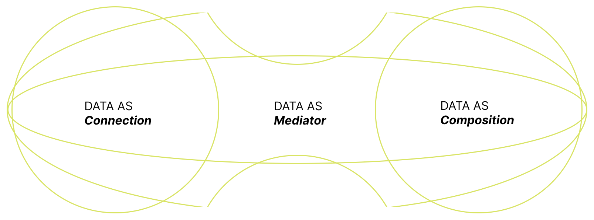
First, data as connection concerns the bringing together of otherwise dispersed forms of environmental knowledge. In Polyrhythm Loom, atmospheric and marine model outputs, biological observation records, regional seismic events, technological signals, and human interactions enter a shared digital environment. These sources provide access to different aspects of the mudflat and its wider ecological context. Their combination does not produce a complete environmental account; rather, it creates opportunities to consider processes that are conventionally recorded, modelled, and encountered separately.
Second, data as mediation recognises that these sources do not transparently reproduce the phenomena they represent. A modelled sea-level value differs from a local tide-gauge measurement, an observation record differs from continuous monitoring of a species, and shortwave radiation describes light conditions rather than directly measuring mangrove physiology. The system further transforms these sources through interpolation, temporal alignment, normalisation, event inference, and threshold-based rules. Each operation makes particular aspects of the environment computationally available while leaving others unrepresented. In this sense, the data and the processes used to translate them actively shape the relationships that can appear in the resulting composition.
Third, data as relational composition concerns what becomes possible when these mediated representations are organised through a shared material logic. In the digital weave, data-derived strands are not only displayed alongside one another; selected environmental conditions determine when computational connections are created, interrupted, or reconfigured. For example, inferred spoonbill feeding conditions can establish connections with the tidal layer, while atmospheric disturbances can remove ordinary inter-layer stitches. Human input introduces further changes to selected relations. These operations make relationality a condition of the fabric's construction rather than only a theme represented by its imagery.
This account does not suggest that datasets possess agency in the same sense as living organisms, nor that the connections produced by the system establish ecological causality. Rather, it highlights how data infrastructures, computational models, and design choices participate in constructing representations of more-than-human environments. For interaction design, treating data relationally therefore involves more than integrating diverse inputs: it requires attending to their provenance, representational limits, and the consequences of how they are brought into relation.
The use of weaving in Polyrhythm Loom extends beyond an aesthetic metaphor for interconnectedness. Weaving offers a constructive logic in which individual strands acquire a larger form through repetition, accumulation, placement, and connection. Within the prototype, this logic provides a way to translate heterogeneous environmental signals into a composition that is progressively generated and open to participation.
One implication concerns the relationship between environmental duration and human experiential time. In Mudflat Clock, the system aligns selected environmental representations to a shared temporal grid and compresses several days of environmental time into minutes of exhibition playback. Intrinsic Time instead uses agent-specific generative models to foreground selected characteristic rhythms. Neither mode reproduces an unmediated ecological temporality. Rather, each demonstrates how temporal scales must be selected and organised before they can enter a shared design representation. This resonates with temporal design perspectives that challenge the assumption of a single, universal time against which different experiences and processes can be measured [5, 17].
A second implication concerns the structural expression of relationships. In many multi-series visualisations, relationships are left for viewers to infer from the proximity, alignment, or correlation of independently displayed signals. In Polyrhythm Loom, selected relationships additionally become explicit computational operations: strands can be connected under particular conditions, while other conditions remove those connections without necessarily removing the strands themselves. The distinction between strand state and relational state allows the composition to express relations as contingent and revisable rather than permanent features of a predefined network.
This is particularly relevant to more-than-human design, where coexistence does not imply uniformity or harmony. The agents represented in the system differ in their temporal characteristics, forms of presence, and relationships to the wetland. Their incorporation into one digital fabric does not resolve these differences. Instead, the weave offers a common compositional structure within which differences, intermittent connections, and interruptions can coexist.
The medium also repositions human participation. Through the treadle, visitors contribute their own strand to a fabric that is already unfolding according to environmental and computational processes. Under specific conditions, their intervention can alter subsequent relational connections. This makes participation consequential within the representation without granting visitors comprehensive control over its other strands. At the same time, the degree and form of human influence remain determined by the interaction rules established by the designer.
These possibilities must be understood in relation to the prototype's current material status. Although its computational grammar uses discrete strand-coverage cells and inter-layer connection instructions, the system does not yet produce a validated warp–weft interlacement draft for physical fabrication. Its contribution at this stage is therefore not a demonstrated textile manufacturing method, but an exploration of how weaving-inspired operations can organise environmental time, relational conditions, and embodied participation within a computational medium. Further material development may reveal how the constraints and affordances of physical weaving transform these relationships.
The composition is necessarily selective. Its data sources differ in geographic scope, temporal resolution, and evidential status; its ecological relationships are inferred through designer-defined proxies and thresholds rather than validated through continuous field observation. Intrinsic Time also differs from Mudflat Clock in signal generation as well as temporal organisation. Moreover, the exhibition has not established how visitors interpret these representations. Future iterations should improve the visibility of data provenance and uncertainty, examine comparable temporal mappings, and investigate participants' interpretations through documented encounters.
Two directions extend this research. First, small-scale material weaving experiments using CAD tools and a compatible multi-shaft loom could investigate how computational rhythms translate into actual weave structures, colour sequences, and material interlacements—and what is transformed or lost in that process. Second, potential collaborations with ecological museums, environmental management agencies, meteorological stations, and local researchers could support more sustained observations, ecologically informed interpretation, and public-facing installations. These remain prospective directions rather than outcomes of the present study.
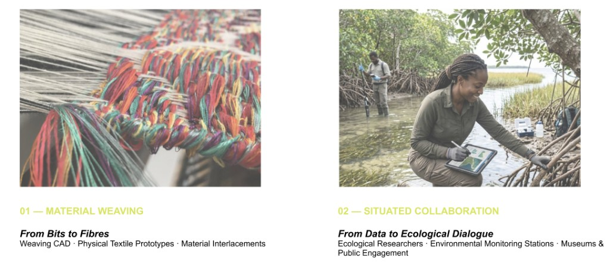
This paper presented Polyrhythm Loom, a research-through-design exploration of computational weaving for articulating heterogeneous ecological temporalities and selected more-than-human relationships. Situated in Macau's Cotai mudflat, the prototype translates environmental information, computational models, and human participation into an unfolding digital fabric.
Through a shared environmental timeline and agent-specific temporal models, the system explores alternative ways of organising ecological rhythms. Its weaving-inspired grammar translates signals into digital strands and conditional connections, allowing relationships to become mutable features of a constructed representation. Treadle interaction further incorporates human actions into this ongoing composition.
Reflecting on the implemented artifact and its design process, we contribute a temporal and relational translation approach and articulate data as relation through connection, mediation, and relational composition. Rather than demonstrating changes in ecological understanding, the work identifies possibilities and constraints of weaving-inspired computational design as a medium for engaging with environmental complexity. Future material experiments and situated ecological collaborations may extend this inquiry beyond the current digital prototype.